Valencia gets about 300 days of sun a year. Let’s use a few.
No booking platform in the middle.
The old town, on foot, at your pace.
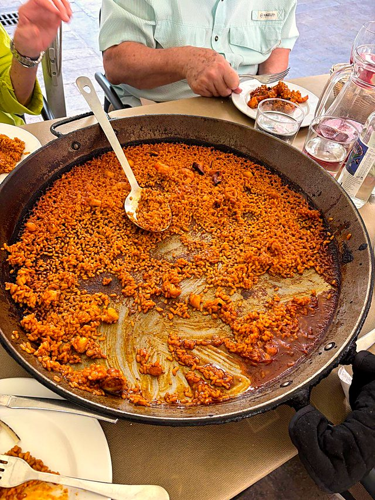
Just you and the people you came with. We start where you like, stop when you're hungry and skip whatever doesn't interest you. The route below is a typical morning. The times move around depending on your ship, the weather and how long we spend at the market.
- Old town walk · 3 h · up to 4 people
- €150
- Personalised walk · 4 h · up to 4 people
- €200
- Personalised walk · 6 h · up to 4 people
- €300
- Each extra person, up to 8
- €10 an hour
- Torres de SerranosA 14th-century city gate. Climb it; the view over the old riverbed is the best free one in town.
- Plaza de la VirgenOn Thursdays at noon the Water Tribunal still meets at the cathedral door. Farmers have settled irrigation fights here for over a thousand years.
- Cathedral & the Micalet207 steps up the bell tower. And a cup inside that Valencia insists is the Holy Grail.
- La Lonja de la SedaThe silk exchange, UNESCO-listed since 1996. Look up at the gargoyles, some of them are rude.
- Mercado CentralAround 300 stalls under one modernist roof. We eat something here.
- Plaza Redonda → horchataTiger-nut milk, with fartons to dunk in it.
Coming off a cruise? Message me and I’ll book a taxi I trust to pick you up at the terminal and bring you to Torres de Serranos, where we start. I plan the walk around your all-aboard time, and if we're ever running tight, I put you in a taxi to the port and pay the fare. How a cruise day works → Getting in from the port →
Pick a day. It’s yours.
Only the days I’m free show up. You get a confirmation email straight away, and I get one too. More than 4 people? Pick the day and put the number in the booking. Want 4 or 6 hours? Choose the length in the calendar, then message me and we build the route together.
Data protection: Nicolás Maldonado (300sun) uses your booking details only to arrange your walk. The calendar is run by Cal.com (USA). Your details aren’t shared with anyone else or used for advertising. You can see, correct or delete them at any time. Privacy policy
The online calendar is almost ready. Until then, send me your date on WhatsApp and I’ll confirm it.
Ask for a dateCook it. Fight over the socarrat.
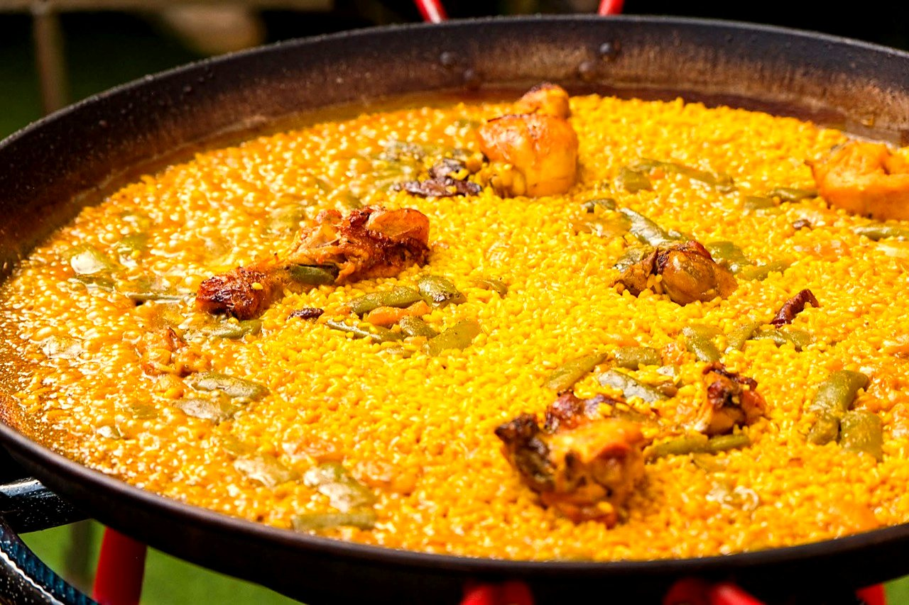
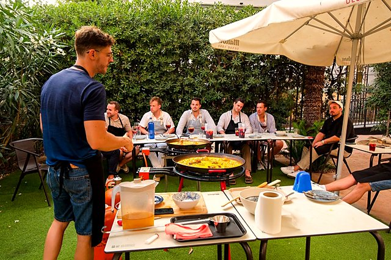
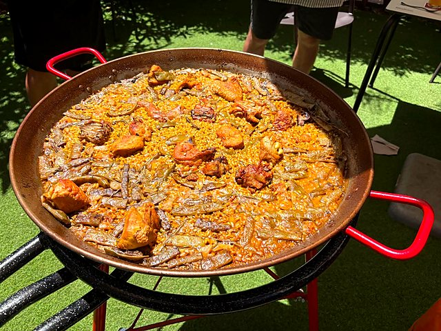
Paella comes from the rice fields just south of Valencia, and people here have strong opinions about it. In the workshop you cook the original one from scratch, then sit down in the garden and eat it with a jug of sangria. Everyone goes home with a certificate.
The crispy layer stuck to the bottom of the pan is the socarrat. It's the best part.
From €65 per person. Works for two people or for a school group of fifty.
- Chicken
- Rabbit
- Ferraura, the flat green beans
- Garrofó, big white beans
- Grated tomato
- Olive oil, a lot
- Saffron
- Round rice from the Albufera
- Rosemary, if the cook says so
- Chorizo
- Prawns with chicken
- Peas
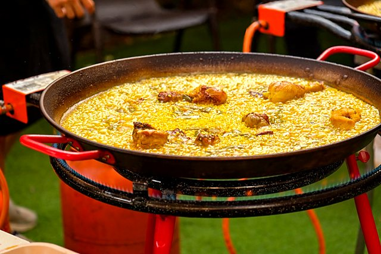
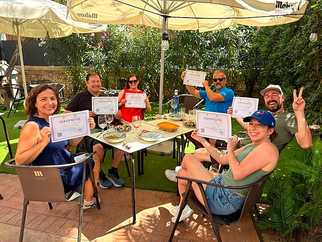
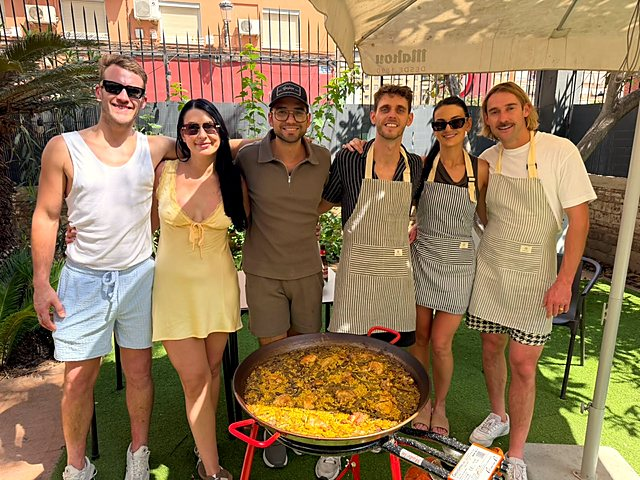
A bed for everyone. Even the teachers.
School trips, university and Erasmus groups, sports teams, choirs, big birthdays. With three hostels working together, a large group doesn't get told "we're full": over 200 beds in shared rooms, plus a few private rooms for the teachers. You deal with one person for the beds, the paella and the walks.
The beach is a tram ride away (Malvarrosa, lines 4 and 6, or the number 19 bus). So the plan for most groups writes itself: old town in the morning, paella at lunch, beach in the afternoon.
- Arrival and departure dates
- How many students and how many adults
- Ages, if it's a school
- Budget per night, roughly
- Anything else you want: paella, walks, a beach day
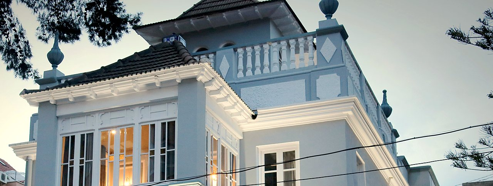
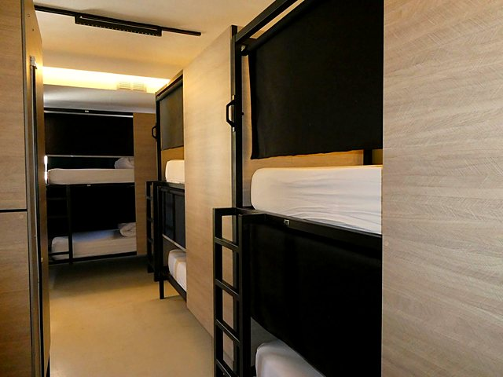
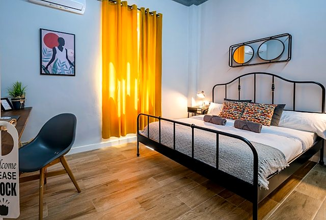
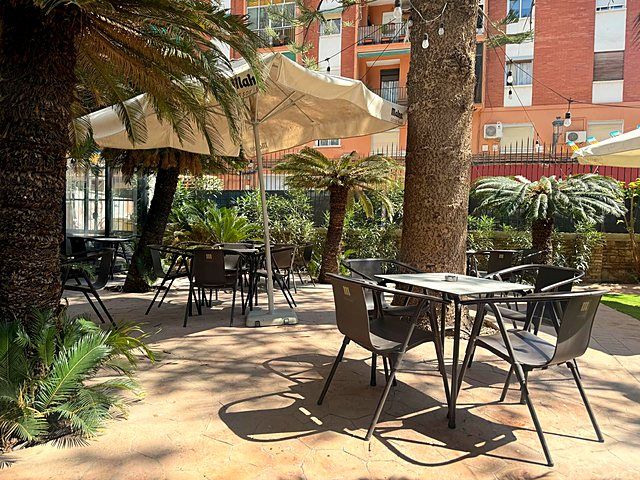
Things people ask.
I'm on a cruise. Will I make it back?
We plan the walk around your all-aboard time, not the arrival time on the itinerary, and finish with plenty of margin for the taxi back to the port. If the ship arrives late, we shorten the route.
Is this an official guided tour?
It's a private walk with a local. We walk the streets together. For the inside of the Cathedral or the Lonja you go in with your own ticket (and the audio guide), and I'll be waiting at the door.
Is it OK for kids or grandparents?
Valencia is flat. We can make the walk shorter, add more coffee stops and skip the 207 steps up the Micalet.
How do I pay?
When you book, I send you a PayPal link for a €30 deposit. That holds the date. The rest you pay at the end of the walk, in cash or by PayPal. Cancel up to 48 hours before and I refund the deposit in full.
And if it rains?
It doesn't rain much here. If it does, the Mercado Central and the Lonja are both covered, or we move you to another day if your plans allow it.
Can I do the paella without the walk?
Yes. Each thing can be booked on its own. Many people do both.
We're a group of 120. Is that too many?
No. Send dates and numbers and we'll tell you what's free across the three hostels.
Write to me.
Fill this in and it opens WhatsApp with your message already written. I usually answer the same day, Spanish time.